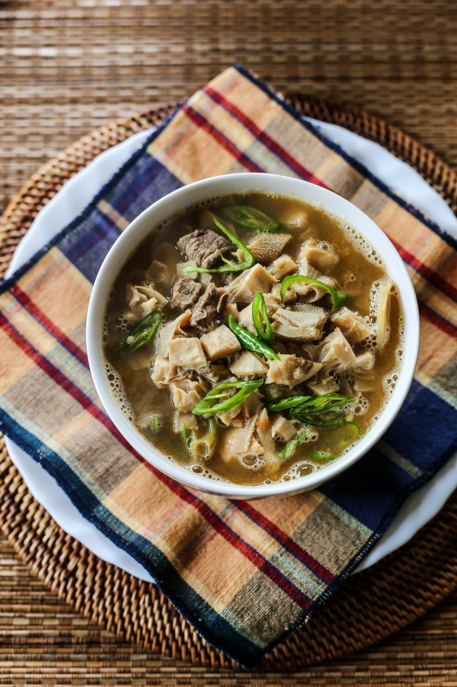

Sinanglaw
Sinanglaw is a filipino dish prepared with beef beef offal flavoured with kamias and bile. it is similar to pinapaitan.
it is also known as sinigang na bulalo. It is made by the ilocanos. The food is not too sour and not too sweet.
Sinanglaw Recipes
- 500g beef brisket or any cheap cut, cubed
- 300g beef tendons, cut into squares
- 300g pre-cooked beef tripe, cubed
- 1/4 cup diluted beef bile or 2–3 pcs bitter gourd, roughly chopped
- 500g kamias or tamarind
- 1 whole garlic, minced
- 1 thumb size ginger, thinly sliced
- 2 large onion, quartered
- 6 pcs finger chillies, thinly sliced
- fish sauce or sea salt
- spinach leaves, optional
- oil
In order steps in cooking sinanglaw
- In a deep pot, put oil then sauté garlic, onions and ginger.
- Add beef and brown all sides. Once brown, add the beef tendons.
- Add water to the pot enough to cover the meat pieces. Bring it to a boil then simmer soup for 45 minutes in low heat.
- Turn off the heat then drain the soup using a fine sieve to have a clear broth. Set aside the meat pieces. Place clear broth on another pot together with the tendons and set aside the beef. Bring it to a boil and simmer until tendons are soft (this might take 60 to 90 minutes more) add water if needed.
- Add the beef, tripe, finger chillies and bile (if using). At this stage if you are using bitter gourd place it in a muslin cloth together with tamarind or kamias, wrap it well then place into the pot. Simmer for 30 minutes.
- Press the muslin cloth over the soup to extract the juices then season with salt or fish sauce. If you want to add some leafy greens, I suggest spinach.

Source:https://www.angsarap.net/2012/03/06/sinanglaw/#tasty-recipes-35225